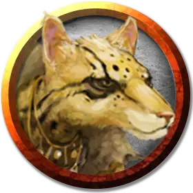

Табакси-охотник
Tabaxi Hunter
Средний Гуманоид (Табакси), хаотично-добрый

Класс Доспеха 14 (кожаный доспех)
Хиты 40 (9к8)
Скорость 30 футов, лазая 20 футов
| мод | спас | ||
|---|---|---|---|
| СИЛ | 10 | +0 | +0 |
| ЛОВ | 17 | +3 | +3 |
| ТЕЛ | 11 | +0 | +0 |
| мод | спас | ||
|---|---|---|---|
| ИНТ | 13 | +1 | +1 |
| МДР | 14 | +2 | +2 |
| ХАР | 15 | +2 | +2 |
Навыки Атлетика +2, Восприятие +4, Выживание +6, Скрытность +5
Чувства тёмное зрение 60 футов, пассивное Восприятие 14
Языки Общий, плюс один любой язык
Опасность 1 (200 опыта)
Бонус мастерства +2
Особенности
Кошачье проворство. Когда табакси двигается в бою в свой ход, он может удвоить свою скорость до конца хода. Использовав эту особенность, табакси не можете использовать её снова, до тех пор, пока он не переместится на 0 футов за один из своих ходов.
Действия
Мультиатака. Табакси совершает две атаки когтями, коротким мечом или коротким луком.
Когти. . Рукопашная атака оружием: +2 к попаданию, досягаемость 5 фт., одна цель. Попадание: 2 (1к4) рубящего урона.
Короткий меч. Рукопашная атака оружием: +5 к попаданию, досягаемость 5 фт., одна цель. Попадание: 6 (1к6 + 3) рубящего урона.
Короткий лук. Дальнобойная атака оружием: +5 к попаданию, дистанция 80/320 фт., одна цель. Попадание: 6 (1к6 + 3) колющего урона.
Описание
Табакси — кошачий народ, родом с земли Мазтика. Конечные скитальцы, Табакси редко остаются в одном месте надолго. Они любят собирать интересные артефакты, собирать рассказы и созерцать все чудеса мира. Это любопытство подталкивает их к тому, чтобы не оставлять не раскрытых тайн, и никакие ни сокровища или ни легенды не остались утерянными. Они почитают непостоянное божество, называемое Кошачьим Богом, которое, как говорят, странствует по миру.
Охотники табакси обучаются выживать в дикой природе, делая их отличными проводниками. Табакси-менестрели собираются в небольшие труппы и обустраивают свой дом в каком-нибудь посёлке, зарабатывая деньги музыкой и рассказыванием историй.
Имена. Обычно у табакси одно имя, данное его или её кланом, и основанное на сложной формуле, включающей астрологию, прорицание, историю клана и другие факторы. Имена табакси могут относиться как к мужчинам, так и к женщинам, большинство использует прозвища, получаемые из полных имён или вдохновлённые ими. Названия кланов табакси обычно основаны на географической достопримечательности, расположенной на территории клана или рядом с ним. Примеры имён табакси включают в себя «Гнездо яиц» («Яйца»), «Мёртвый лист» («Лист»), «Глаза оникса» («Оникс»), «Потерянное копье» («Потерянный») и «Дневная луна» («Луна»). Имена кланов включают «Отдалённый Дождь», «Сто Перьев», «Спящий Крик», «Яркие Скалы» и «Храпящая Гора».